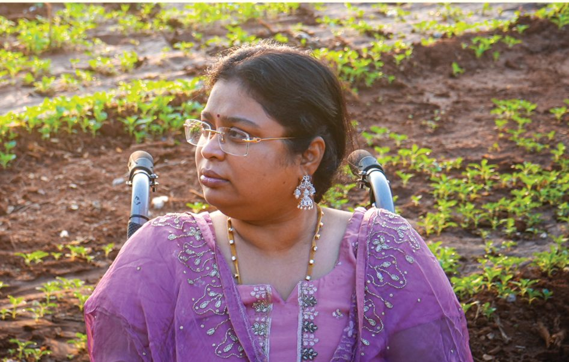

16+ years of
building officers.
Founded in Hyderabad by Smt. Bala Latha Mallavarapu with one mission — to produce 100 high-calibre civil servants for the nation. Today we teach UPSC, APPSC and TGPSC aspirants across Hyderabad, Vijayawada and Tirupati.


“Empowering aspirants through excellence in governance and law.”
Smt. Bala Latha Mallavarapu cleared the Civil Services twice (AIR 399 in 2005, AIR 167 in 2017) and served 12 years in the Ministry of Defence, rising to Deputy Director. She now leads CSB IAS Academy and CSB Groups Academy.
100 high-calibre civil servants
Quality Civil Services preparation for every deserving aspirant, regardless of background.
Ethical, capable officers
Public servants who serve the nation with integrity and compassion.
CSB IAS & CSB Groups
UPSC Civil Services, plus APPSC & TGPSC Group 1 and Group 2.
Our journey.
CSB IAS Academy founded in Ashok Nagar, Hyderabad.
Students begin clearing the Civil Services Examination.
Second campus at Andhra Loyola College, with the Degree + IAS programme.
Third campus on Air Bypass Road, Tirupati.
Dedicated APPSC & TGPSC coaching and the CSB Groups app.
1,00,000+ students mentored and ~100 Civil Services selections.